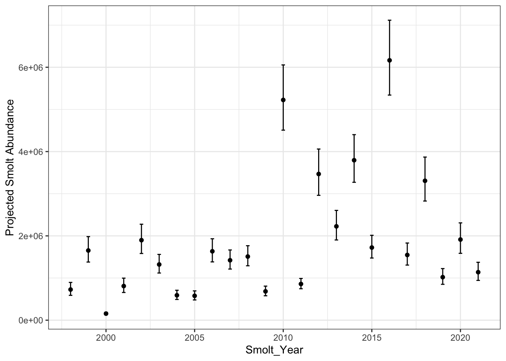

| Smolt_Year | Sample_Year | Sample_Month | Sample_Day | Life_Stage | Abundance | CL_95 |
|---|---|---|---|---|---|---|
| 1998 | 1997 | 7 | 29 | Parr | 1453218 | 0.430 |
| 1998 | 1997 | 11 | 3 | Smolt | 937685 | 0.550 |
| 1999 | 1998 | 5 | 8 | Parr | 3034614 | 0.220 |
| 1999 | 1998 | 7 | 24 | Parr | 2498905 | 0.110 |
| 1999 | 1998 | 10 | 2 | Smolt | 3765709 | 0.160 |
| 2000 | 1999 | 5 | 28 | Parr | 256348 | 0.200 |
| 2000 | 1999 | 8 | 11 | Parr | 283794 | 0.228 |
| 2000 | 1999 | 9 | 25 | Smolt | 303857 | 0.200 |
| 2001 | 2000 | 7 | 5 | Smolt | 1809382 | 0.197 |
| 2001 | 2000 | 9 | 27 | Smolt | 1083817 | 0.177 |
| 2002 | 2001 | 6 | 11 | Parr | 4040273 | 0.330 |
| 2002 | 2001 | 7 | 25 | Parr | 2906361 | 0.220 |
| 2002 | 2001 | 11 | 27 | Smolt | 2927009 | 0.114 |
| 2003 | 2002 | 4 | 23 | Parr | 3309094 | 0.210 |
| 2003 | 2002 | 8 | 26 | Parr | 1833000 | 0.180 |
| 2003 | 2002 | 10 | 29 | Smolt | 1832960 | 0.200 |
| 2003 | 2002 | 11 | 25 | Smolt | 2080978 | 0.120 |
| 2004 | 2003 | 5 | 26 | Parr | 2052392 | 0.220 |
| 2004 | 2003 | 9 | 21 | Smolt | 821678 | 0.100 |
| 2004 | 2004 | 3 | 2 | Smolt | 434032 | 0.140 |
| 2005 | 2004 | 7 | 21 | Parr | 1035279 | 0.090 |
| 2005 | 2004 | 11 | 3 | Smolt | 620224 | 0.160 |
| 2005 | 2005 | 2 | 19 | Smolt | 851385 | 0.410 |
| 2006 | 2005 | 5 | 26 | Parr | 4292070 | 0.140 |
| 2006 | 2005 | 8 | 4 | Parr | 3124599 | 0.140 |
| 2006 | 2005 | 11 | 28 | Smolt | 1815048 | 0.120 |
| 2006 | 2006 | 1 | 18 | Smolt | 1752205 | 0.180 |
| 2007 | 2006 | 5 | 17 | Parr | 2241066 | 0.250 |
| 2007 | 2006 | 10 | 4 | Smolt | 2350227 | 0.100 |
| 2007 | 2006 | 11 | 22 | Smolt | 2305443 | 0.130 |
| 2007 | 2006 | 12 | 5 | Smolt | 1991022 | 0.080 |
| 2007 | 2007 | 3 | 14 | Smolt | 1460145 | 0.120 |
| 2008 | 2007 | 7 | 18 | Parr | 3679853 | 0.040 |
| 2008 | 2007 | 8 | 15 | Parr | 1792101 | 0.020 |
| 2008 | 2007 | 10 | 3 | Smolt | 2250545 | 0.030 |
| 2008 | 2007 | 11 | 15 | Smolt | 2084728 | 0.020 |
| 2008 | 2008 | 1 | 15 | Smolt | 2065808 | 0.020 |
| 2009 | 2008 | 7 | 4 | Parr | 1143809 | 0.190 |
| 2009 | 2008 | 8 | 14 | Parr | 1669649 | 0.120 |
| 2009 | 2008 | 11 | 4 | Smolt | 886980 | 0.050 |
| 2009 | 2008 | 11 | 5 | Smolt | 863674 | 0.060 |
| 2010 | 2009 | 5 | 18 | Parr | 10202000 | 0.490 |
| 2010 | 2009 | 6 | 17 | Parr | 9786616 | 0.420 |
| 2010 | 2009 | 7 | 20 | Parr | 9586800 | 0.090 |
| 2010 | 2009 | 8 | 24 | Parr | 7879608 | 0.140 |
| 2010 | 2009 | 11 | 23 | Smolt | 7252943 | 0.090 |
| 2010 | 2010 | 2 | 10 | Smolt | 7723668 | 0.090 |
| 2011 | 2010 | 5 | 3 | Parr | 2652519 | 0.150 |
| 2011 | 2010 | 6 | 23 | Parr | 1383958 | 0.240 |
| 2011 | 2010 | 7 | 12 | Parr | 1938000 | 0.150 |
| 2011 | 2010 | 8 | 9 | Parr | 2107598 | 0.150 |
| 2011 | 2010 | 10 | 2 | Smolt | 1113593 | 0.160 |
| 2011 | 2010 | 11 | 10 | Smolt | 939000 | 0.120 |
| 2011 | 2011 | 3 | 10 | Smolt | 736000 | 0.100 |
| 2012 | 2011 | 6 | 29 | Parr | 5938545 | 0.270 |
| 2012 | 2011 | 8 | 2 | Parr | 6850086 | 0.080 |
| 2012 | 2011 | 10 | 16 | Smolt | 4374360 | 0.070 |
| 2012 | 2011 | 11 | 28 | Smolt | 4780224 | 0.110 |
| 2012 | 2012 | 3 | 19 | Smolt | 4152818 | 0.100 |
| 2013 | 2012 | 6 | 14 | Parr | 4390431 | 0.200 |
| 2013 | 2012 | 7 | 24 | Parr | 4420753 | 0.110 |
| 2013 | 2012 | 10 | 11 | Smolt | 3495461 | 0.090 |
| 2013 | 2012 | 11 | 17 | Smolt | 2493514 | 0.080 |
| 2013 | 2013 | 2 | 15 | Smolt | 2706330 | 0.060 |
| 2014 | 2013 | 6 | 6 | Parr | 8765535 | 0.200 |
| 2014 | 2013 | 7 | 9 | Parr | 6042108 | 0.190 |
| 2014 | 2013 | 8 | 3 | Parr | 6944319 | 0.070 |
| 2014 | 2013 | 10 | 10 | Smolt | 5093247 | 0.060 |
| 2014 | 2013 | 11 | 6 | Smolt | 4555839 | 0.060 |
| 2014 | 2014 | 3 | 18 | Smolt | 5357286 | 0.110 |
| 2015 | 2014 | 5 | 29 | Parr | 3390238 | 0.148 |
| 2015 | 2014 | 6 | 25 | Parr | 3194755 | 0.238 |
| 2015 | 2014 | 7 | 24 | Parr | 3573613 | 0.144 |
| 2015 | 2014 | 10 | 23 | Smolt | 2651404 | 0.128 |
| 2015 | 2015 | 2 | 27 | Smolt | 1767687 | 0.104 |
| 2016 | 2015 | 6 | 17 | Parr | 16441296 | 0.200 |
| 2016 | 2015 | 7 | 15 | Parr | 12393779 | 0.100 |
| 2016 | 2015 | 8 | 5 | Parr | 9434635 | 0.130 |
| 2016 | 2015 | 10 | 8 | Smolt | 7391231 | 0.110 |
| 2016 | 2015 | 11 | 15 | Smolt | 7886247 | 0.230 |
| 2016 | 2016 | 2 | 3 | Smolt | 7541882 | 0.080 |
| 2016 | 2016 | 3 | 3 | Smolt | 6713244 | 0.120 |
| 2017 | 2016 | 7 | 6 | Parr | 2940000 | 0.139 |
| 2017 | 2016 | 8 | 15 | Parr | 3084707 | 0.110 |
| 2017 | 2016 | 10 | 30 | Smolt | 2649923 | 0.170 |
| 2017 | 2017 | 3 | 28 | Smolt | 1121501 | 0.170 |
| 2018 | 2017 | 6 | 26 | Parr | 5852282 | 0.330 |
| 2018 | 2017 | 7 | 24 | Parr | 7902765 | 0.140 |
| 2018 | 2017 | 10 | 16 | Smolt | 3711785 | 0.160 |
| 2018 | 2017 | 11 | 16 | Smolt | 4398350 | 0.160 |
| 2018 | 2018 | 2 | 15 | Smolt | 4258252 | 0.110 |
| 2019 | 2018 | 7 | 27 | Parr | 1854521 | 0.189 |
| 2019 | 2018 | 8 | 9 | Parr | 1768617 | 0.150 |
| 2019 | 2018 | 10 | 15 | Smolt | 1556054 | 0.160 |
| 2020 | 2019 | 11 | 1 | Smolt | 2347619 | 0.150 |
| 2020 | 2019 | 11 | 22 | Smolt | 3099269 | 0.120 |
| 2020 | 2020 | 2 | 27 | Smolt | 1981054 | 0.170 |
| 2021 | 2020 | 10 | 21 | Smolt | 1789522 | 0.130 |
| 2021 | 2020 | 11 | 19 | Smolt | 1417467 | 0.130 |
| 2021 | 2021 | 3 | 15 | Smolt | 1185285 | 0.190 |
Analysis OSO Parr and Spawners
Osoyoos Lake Parr and Spawners
Data, metadata, and references to background and methods are in CNAT_nuOkanagan_Juveniles 22.08.17.xlsx last updated 2022-10-05 by Howard Stiff. This report is just a first look.
Parr estimates are fall and winter acoustic and trawl surveys (ATS) of all O. nerka in Osoyoos Lake, most of which will migrate the following Spring as age 0.1 smolts. A small by variable faction are (1) Kokanee that are not anadromous, and (2) parr that will migrate as age 0.2 smolts after an additional lake year.
The age composition of ATS surveys is not assembled in this dataset, but may be inferred from the age composition of return adults (freshwater years are determined: x.1 and x.2 where x is ocean years).
If parr that will migrate as age 0.2 smolts are a large fraction of ATS estimates, the survival from brood year adults to smolts will be incorrect. This could be a severe overestimate in the case where parr from from abundant spawners grow slowly and consequently produce a large fraction of 0.2 age smolts that are attributed to scant spawner abundance the following year. At the same time, survival from the abundant spawners will be underestimated. These two effects will tend to shift fisheries management toward a higher exploitation rate and a lower target for spawner abundance.
Here we present parr and pre-smolts estimate sans age.
Transformation
The .xlsx file was copied to a Sheet: copy of CNAT_nuOkanagan_Juveniles 22.08.17 Only the tab Juvenile Abundance was retained. Result of formulae in that tab were converted to values only. The information about which dates (rows) were averaged for parr abundance estimates was coded as an additional column Life_Stage with values: Parr, Smolt, omit, and blank. That tab was copied to a tab sort_shorten where rows with calculated results were deleted and the data sorted by Life_Stage. The result is a sequence of 44 rows for parr abundance estimates, 56 pre-smolt estimates, 13 observations unused for parr and pre-smolt estimates (typically September, see comments in .xlxs), and 3 values marked unusable. These three were deleted, as was a single observation for Smolt_Year 2022 without dates.
Sample dates in Excel format was converted to display as yyyy-mm-dd (ISO 6401). The Sheets function split text into columns then resulted in usable date information: Sample_Year, Sample_Month, Sample_Day.
The data is read using googlesheets4::read_sheet(URL). This table is the data for Parr and Smolt.
Day of the Year for Samples
Dates are converted to solar day of the year: solar day 0 = solar day 365 = Julian day December 21 (imprecise but sufficient), so December 31 is solar day 10. Solar days is Julian day +10. This includes the additional day after February 28 in a leap year: year mod 4 = 0 & month > 2. For parr estimates, Smolt_Year = Sample_Year + 1. Parr surveys can extend past the Julian calendar year end, into Smolt_Year. In that case, to provide uniform ages for a single cohort (brood) of parr and subsequent smolts, the solar year is extended by adding 365.
| Radians | Solar Day (rounded) |
Solar Event | Subsequent Season |
|---|---|---|---|
| \(0,\ 2\pi\) | 0 | solstitium hiemale | winter |
| \(\pi /2\) | 92 | aequinoctium vernum | spring |
| \(\pi\) | 183 | solstitium aestatis | summer |
| \(3 \pi /2\) | 274 | aequinoctium autumnale | fall |
Relative Abundance Trend
First, the data as collected, all years together.
Code
ggplot( data=a1, aes(solar,Abundance,
group=factor(Smolt_Year),color=factor(Smolt_Year))) + theme_bw() +
geom_line() + geom_point() + labs(x="Solar Day") +
geom_vline(data=season, aes(xintercept=seasons), col="blue",lty="dotted")A Model for Mortality Rate
From the simplest model of population decline: a fixed per capita mortality rate, we can extract simple regression to describe parr abundance \(N\) by days \(t\) within a Smolt_Year.
\[ \begin{align} \frac{dN}{dt} &= m \\ N_t &= N_0 e^{-mt}\\ \text{log}(N_t) &= \text{log}(N_0) -mt \\ \hat{y} &\sim a -bt \end{align} \]
Applied to many years (indexed as j ), with fixed m, this regression estimates the initial abundance \(N_0\) at some arbitrary time from all of the observations in that Smolt_Year. Opening m to vary by day or year according to various factors (indexed as i ) such as water flows, mitigation of extreme flows by FWMT, smolt size, smolt density, and perhaps trends across years:
\[ \begin{align} \text{log}(N_{t,j}) & = \text{log}(N_{0,j}) -mt \\ & = \text{log}(N_{0,j}) -(m_0 + \sum_i m_i) t \\ \end{align} \]
First, a review of the abundance estimates as \(\text{log}(N_{t})\). The expectation is that estimates within each Smolt_Year will be in a straight line.
Code
ggplot( data=a1, aes(solar,log(Abundance),
group=factor(Smolt_Year), color=factor(Smolt_Year) )) + theme_bw() +
geom_line() + geom_point() +
labs(x="Solar Day", y = "log(Abundance)") +
geom_vline(data= season, aes(xintercept=seasons), col="blue")The lines show a residual convex shape, indicating a decline in m with time, pehaps due to parr size, temperature, or day length. Dealing with varying mortality is deferred.
Some data appear erroneous: some abundance estimates exceed preceding estimates in the same brood. Thus attention to relative precision is required. The 95% confidence limit available for each ATS survey estimate is information related to precision and applicable as a regression weight: \((\textit{CL95})^{~ -2}\). The range in CL95 is 2% to 55%, thus weights range 2500 to 3. Given the objective is to downweight poor data, rather than force lines through points deemed, pehaps spuriously, precise, then maximum weight was set to 100, corresponding to CL_95 < 10%. This affected 21 observations: their weights are equal and maximal.
For instance, the surveys from Smolt_Year 2011 have a value in June that is much lower that in July (by 28%) and August (by 35%) lower than July, but that June survey has the largest 95% CL for those surveys; the surrounding surveys have weights 2.6 time greater (see Table). Dealing with the uncertainty in the June value helps to clarify an apparent 53% drop in abundance between August and October.
Code
# add weights
a1$weight <- a1$CL_95^(-2)
a1$weight[a1$weight > 100] <- 100
x <- a1[a1$Smolt_Year == 2011,c(2,3,6,7,9)] # 7 obs
kable(x, digits=2,caption = "Table 0. Problematic data with appropriate regression weights" )| Sample_Year | Sample_Month | Abundance | CL_95 | weight |
|---|---|---|---|---|
| 2010 | 5 | 2652519 | 0.15 | 44.44 |
| 2010 | 6 | 1383958 | 0.24 | 17.36 |
| 2010 | 7 | 1938000 | 0.15 | 44.44 |
| 2010 | 8 | 2107598 | 0.15 | 44.44 |
| 2010 | 10 | 1113593 | 0.16 | 39.06 |
| 2010 | 11 | 939000 | 0.12 | 69.44 |
| 2011 | 3 | 736000 | 0.10 | 100.00 |
Regression: Log(N)~mt
Reg.1: N_0 by year, fixed mortality
Step 1 is one line for each year, with mortality rate m fixed across all years. This is a preliminary model for comparison to subsequent models for mortality. The estimates for \(\text{log}(N_{0,i})\) correspond to a factor for fSmolt_Year, enabling the regression \[ \text{lm}(\ \text{log}(Abundance) \sim -1 + fSmoltYear + solar \ )\]
where -1 (or 0) indicates there is no overall intercept, but separate intercepts for each level of the factor fSmoltYear, and a single parameter to estimate the effect accumulating mortality by day. The intercepts are corresond to day \(t=0\).
Code
par(tcl=0.2)
hist(a1$solar[a1$solar < 250], yaxs="i", ylim=c(0,10), col="salmon", breaks=12,
xlab="Solar Day", main=""); box();
axis(3,labels=FALSE); axis(4,labels=FALSE)
abline(v=204.5, lwd=2); abline(v=seasons, col='blue',lty="dotted")The earliest sample is solar day 123, suggesting the date for estimation of \(N_0\) at day 120. Alternatively, to minimize extrapolation and be more comparable to conventional estimates (mean abundance before Fall Equinox regardless of day) the mode (about day 215), median (day 204), or mean (day 197) can be used to estimate summer abundance of parr (separately from presmolts). There might be an ecological argument for standardizing to Summer Solstice (day 183). In what follows, the median day of surveys before 2021 is day 0 for regressions.
Thus
Code
# create factor for Smolt_Year
day0 = 204
Smolt_Year= 1998:2021
a1$fSmoltYear <- factor(a1$Smolt_Year)
reg1 <- lm(log(Abundance) ~ 0 + fSmoltYear + I(solar-day0), data=a1)
temp <- summary(reg1)$coefficients[1:24 ,1:2]
temp <- cbind(temp, N0 = exp(temp[,1]),
CL95_low = exp(temp[ ,1] -1.96*temp[,2] ),
CL95_high = exp(temp[ ,1] +1.96*temp[,2]) )
kable(temp, digits=c(2,2,0,0,0) , caption='Parr abundance at solar day 204. Estimate is the fitted log(abundance), the antilog is N_0.')| Estimate | Std. Error | N0 | CL95_low | CL95_high | |
|---|---|---|---|---|---|
| fSmoltYear1998 | 14.13 | 0.15 | 1372951 | 1029889 | 1830288 |
| fSmoltYear1999 | 14.95 | 0.12 | 3123928 | 2473589 | 3945249 |
| fSmoltYear2000 | 12.59 | 0.12 | 294390 | 233071 | 371842 |
| fSmoltYear2001 | 14.24 | 0.15 | 1529248 | 1148487 | 2036242 |
| fSmoltYear2002 | 15.09 | 0.12 | 3586459 | 2837803 | 4532621 |
| fSmoltYear2003 | 14.73 | 0.10 | 2496506 | 2036569 | 3060315 |
| fSmoltYear2004 | 13.93 | 0.12 | 1116050 | 880614 | 1414430 |
| fSmoltYear2005 | 13.90 | 0.12 | 1091042 | 858416 | 1386709 |
| fSmoltYear2006 | 14.94 | 0.10 | 3088077 | 2514875 | 3791926 |
| fSmoltYear2007 | 14.80 | 0.10 | 2685771 | 2224875 | 3242143 |
| fSmoltYear2008 | 14.86 | 0.09 | 2852927 | 2369982 | 3434284 |
| fSmoltYear2009 | 14.07 | 0.10 | 1291890 | 1053022 | 1584944 |
| fSmoltYear2010 | 16.11 | 0.09 | 9872902 | 8355212 | 11666275 |
| fSmoltYear2011 | 14.30 | 0.08 | 1623381 | 1390357 | 1895460 |
| fSmoltYear2012 | 15.70 | 0.10 | 6553224 | 5436688 | 7899064 |
| fSmoltYear2013 | 15.25 | 0.09 | 4206330 | 3495096 | 5062298 |
| fSmoltYear2014 | 15.79 | 0.09 | 7170020 | 6057377 | 8487038 |
| fSmoltYear2015 | 15.00 | 0.09 | 3256030 | 2712179 | 3908934 |
| fSmoltYear2016 | 16.27 | 0.08 | 11648681 | 9934613 | 13658484 |
| fSmoltYear2017 | 14.89 | 0.11 | 2922794 | 2374770 | 3597285 |
| fSmoltYear2018 | 15.65 | 0.09 | 6249233 | 5191248 | 7522838 |
| fSmoltYear2019 | 14.47 | 0.12 | 1928068 | 1525214 | 2437327 |
| fSmoltYear2020 | 15.10 | 0.13 | 3615223 | 2828735 | 4620383 |
| fSmoltYear2021 | 14.58 | 0.13 | 2151237 | 1682904 | 2749902 |
Estimated abundances at solar day 204 range from e12.59(0.12) thus 233 to 372 thousand in Smolt_Year 2000 to e16.27(0.08) thus 9.93 to 13.7 million in 2016.
Plot Reg.1
Code
# get number surviving every three days, for each Smolt_Year. m is coeff #25
day<- seq(0,336,3)
surv= exp(reg1$coefficients[25]* day) # from 1.0 to 0.43
n_surv <- surv %o% exp(reg1$coefficients[1:24]) %>% as.data.frame # outer product
n_surv$day <- day +120 # column 25; 0,3,6,9,12. 113 rows. Go back to solary day
# fSmoltYear1999 fSmoltYear2000 day
# 3858906.3 363652.6 120
n_surv <- melt(n_surv, id.vars="day") # long format to plot
# day variable value
# 120 fSmoltYear1998 1695970
# 123 fSmoltYear1998 1683220
ggplot(data=n_surv, aes(day, value, group=variable)) +
theme_bw() + geom_line() +
labs(x="Day", y = "Abundance") +
geom_vline(data= season, aes(xintercept=seasons), col="blue")Project Parr to Smolts
The invariant mortality rate m is \(0.00251(0.000245) \ day^{-1}\) or 0.25% per day with standard deviation 1/10 that. This is small, about 7.2% per month, but accumulates so that survival from day 204 until day 457 (Spring Equinox, taken as smolt emigration) is
\[ 1-e^{-0.00251 (sd: \ 0.000245) \ 253} = 0.471 \ (0.40 \text{ to } 0.53) \]
From that survival, the estimates for smolts would \(0.471 \times 294390 = 138657\) in 2000 and \(0.471 \times 11648681=5486529\) in 2016.
Including uncertainty in both \(N_0\text{ and } m\) to calculate CL95% for their product, the pre-smolts at an emigration date, requires noting that \(\text{qnorm}(-1.96)^2=0.025^2=0.000625\) so the CL95% for the projected log abundance is \(t\times m(\pm 1.00224\ \sigma_m) \times N_0(\pm 1.00224\ \sigma_{N_0})\). The following table projects pre-smolt abundance at Spring Equinox with CL95%. In passing, using \(1\sigma\) to determine CL95% for a product overestimates by a factor of 0.0068: negligible in this context.
Code
m= summary(reg1)$coefficients[25,1:2] # -0.0025153899, 0.0002451675
days=253 # days from date of N_0 parr to N_t projected smolts.
# m is negative, so (m-se) is more severe mortality, so lower survival
sigma84=1.00224
proj= data.frame(
PreSmolt= exp( temp[,1] + days * m[1] ), # estimate
# low abun, high mort
Low95= exp((temp[,1]-sigma84*temp[,2]) + days*(m[1]-sigma84*m[2])),
# high bund, low mort # low abun, high mort
High95= exp((temp[,1]+sigma84*temp[,2]) + days*(m[1]+sigma84*m[2]))) Plot Projected Smolts
Code
proj$Smolt_Year=Smolt_Year # add x axis
ggplot(proj, aes(x=Smolt_Year, y=PreSmolt)) + theme_bw()+
labs( y = "Projected Smolt Abundance") +
geom_point() + geom_errorbar(aes(ymin =Low95, ymax =High95), width = 0.2)
Reg. 2: Weights and FWMT
The surveys have standard deviations, from which regression weights were calculated as \(w= \sigma^{-2}\). See histogram. Weights act via \(\text{min} \sum w\epsilon^2\) where \(\epsilon\) is the residual: observed - fitted. About half the weights are half the maximum, and about 1/8 of observations are strongly downweighted: less than 20% of maximum.
Code
par(tcl=0.2)
hist(a1$weight, breaks=c(0,20,40,60,80,100), xlab = "Weight", main='');
axis(3,labels=F);axis(4,labels=F); box()Applying weights will change the preceding regression, as per following table.
Code
reg2 <- lm(log(Abundance) ~ -1 +fSmoltYear + I(solar-120),
weights= weight, data=a1)
temp <- summary(reg2)$coefficients[1:24 ,1:2]
temp <- cbind(temp, N0 = exp(temp[,1]),
CL95_low = exp(temp[ ,1] -1.96*temp[,2] ),
CL95_high = exp(temp[ ,1] +1.96*temp[,2]) )
kable(temp, digits=c(2,2,0,0,0) , caption='Parr abundance at solar day 204 using weighted regression. Estimate is the fitted log(abundance), the antilog is N_0.')| Estimate | Std. Error | N0 | CL95_low | CL95_high | |
|---|---|---|---|---|---|
| fSmoltYear1998 | 14.37 | 0.49 | 1745156 | 665507 | 4576315 |
| fSmoltYear1999 | 15.14 | 0.12 | 3741984 | 2935221 | 4770492 |
| fSmoltYear2000 | 12.80 | 0.18 | 363972 | 257917 | 513636 |
| fSmoltYear2001 | 14.44 | 0.19 | 1867380 | 1278686 | 2727103 |
| fSmoltYear2002 | 15.38 | 0.15 | 4787959 | 3592827 | 6380643 |
| fSmoltYear2003 | 14.99 | 0.13 | 3223757 | 2521939 | 4120880 |
| fSmoltYear2004 | 14.02 | 0.12 | 1227156 | 971130 | 1550680 |
| fSmoltYear2005 | 14.04 | 0.12 | 1246701 | 977215 | 1590502 |
| fSmoltYear2006 | 15.15 | 0.11 | 3807436 | 3079421 | 4707562 |
| fSmoltYear2007 | 15.08 | 0.09 | 3543056 | 2946662 | 4260157 |
| fSmoltYear2008 | 15.08 | 0.08 | 3546884 | 3052900 | 4120799 |
| fSmoltYear2009 | 14.29 | 0.09 | 1605410 | 1337293 | 1927282 |
| fSmoltYear2010 | 16.39 | 0.09 | 13098452 | 11015860 | 15574766 |
| fSmoltYear2011 | 14.49 | 0.09 | 1963670 | 1654844 | 2330128 |
| fSmoltYear2012 | 15.94 | 0.09 | 8387087 | 7062991 | 9959411 |
| fSmoltYear2013 | 15.47 | 0.09 | 5242514 | 4436670 | 6194725 |
| fSmoltYear2014 | 16.00 | 0.08 | 8902138 | 7583743 | 10449729 |
| fSmoltYear2015 | 15.22 | 0.10 | 4068555 | 3351960 | 4938346 |
| fSmoltYear2016 | 16.48 | 0.08 | 14314256 | 12203116 | 16790623 |
| fSmoltYear2017 | 15.14 | 0.11 | 3751038 | 3032485 | 4639854 |
| fSmoltYear2018 | 15.93 | 0.11 | 8268008 | 6674764 | 10241554 |
| fSmoltYear2019 | 14.69 | 0.14 | 2392277 | 1815552 | 3152205 |
| fSmoltYear2020 | 15.35 | 0.13 | 4650110 | 3595453 | 6014132 |
| fSmoltYear2021 | 14.80 | 0.13 | 2668315 | 2062807 | 3451563 |
With weights, the residuals are all larger, with the extremes 10 times larger: from -0.39 and 0.49 to -3.8 and 3.1, as expected from ill-fitting and imprecise points being less effective. The fixed mortality rate estimate is essentially unchanged, -0.002553 instead of -0.0002515. An overall increase in fitted abundance estimates is from low weights for low outliers, as examined in the following plot.
#|code-fold: true
rr <- data.frame(x = reg1$coefficients[1:24],y = reg2$coefficients[1:24])
ggplot(data=rr, aes(x,y)) + theme_bw() + geom_point()+
geom_text( aes( label = c(1998:2021)), size=2, nudge_y=0.2 ) +
geom_abline(aes(intercept = 0, slope = 1)) +
labs(x="log Abundance, No Weights", y = "log Abundance, Weighted") The linear, not logarithmic, comparison clarifies how the largest abundances increased.
#|code-fold: true
rr1 <- exp(rr) # estimates, not logged.
# nudge_y is on scale with max 15 million.
ggplot(data=rr1, aes(x,y)) + theme_bw() + geom_point()+
geom_text( aes( label = c(1998:2021)), size=2, nudge_y=0.5e6 ) +
geom_abline(aes(intercept = 0, slope = 1)) +
labs(x="Abundance, No Weights", y = "Abundance, Weighted") Varying Mortality Rate
Hyatt () describes the parr mortality rate as initially high, related to small size, and declining to nearly zero in winter. Various models for varying m might be proposed: \(m=f(length)=f(time)\); but the simplest is an exponential decrease with time:
\[ \begin{align} dm/dt &=-m_1 \\ m_t &= m_0~e^{-m_1 t} \end{align} \]
where m0 is the rate at some day t=1, and m1 determines how quickly mt declines. This allows m to be invariant, as preceding, if \(m_1=0\), or to decline in proportion to days of life.
Note that t can be negative, allowing an ecologically meaningful, or practical, choice for day t=0. Example: \(t=(-100,0,100); ~ m_0=0.0025; ~ m_1=0.002; ~ m_t= (0.00305,0.0025,0.00205).\)
Fitting this non-linear model requires searching for parameters that minimize a criterion for fit; a steepest-descent to minimize SSQ (sum of squared residuals). The model has two parts:
(1) mortality rates according to day of the year, then (
2) for each Smolt_Year, survivals from a fitted \(N_0\) at Day Zero (solar day 204) to each survey day is the prediction of parr abundances.
# exponential decline in mortality rate as model for parr abundance
# local functions.
ssq <- function(x) sum((x-mean(x))^2) # for r^2
ssqw <- function(x,w) sum( w* (x-mean(x))^2) / sum(w) # for r^2
axis34 <- function(){axis(3,labels=FALSE);axis(4,labels=FALSE)}
# mcurve = function (par, dat, fit=TRUE) {
# # n0=par[1]; m=par[2]; lambda=par[3];
# mt = par[2]*exp(-par[3]*dat[,1]) # exponential decline in mortality rate.
# yhat = par[1]*exp(-mt*dat[ ,1]) # decline in parr abundance.
# ssq = sum((yhat-dat[ ,2])^2)
# if(fit) return(ssq) # for optimizing
# return(list(ssq, yhat)) # post fit, examine result
# }
Parr1 <- function (par, dat, fit=TRUE) {
# par is m0 and m1 then 24 of n0
# dat is factor, day, abundance, survival
# day previously adjusted by subtracting Day Zero (? median day summer surveys)
a = range(dat[,'day']) # earliest and latest survey day: -81 258
first_day = a[1]; last_day=a[2]
ndays = 1 + (a[2]-a[1]) # duration, inclusive. 1 + (258 - -81) = 340
surv=numeric(ndays)
# Step 1. mt the declining mortality rate, by days, same every Smolt_Year
mt = par[1]*exp(-par[2]*(first_day:last_day) ) # each day's rate
# Step 2. survival from day zero to first day is >1.
surv[1] = exp(-mt[1] * first_day) # exp(-0.00674 * -81) = 1.726751
# Step 3. subsequent survival to each eay. all preceding survivals
surv = cumprod(c(surv[1],exp(-mt[-1])))
# x[c(1,81,160,ndays)] 1.726 1.193 1.012 0.902
# Step 4. match survival from Day Zero (204) to ATS survey day
# note: range(dat[,2] - first_day) 0, 339 so add 1 to index dat[,2] into surv
dat$survival = surv[1+(dat[,2]-first_day)]
# dat$day[1:5] 16 113 -66 11 81
# dat$survival[1:5] 1.14 0.97 1.57 1.15 1.01
# Step 5. predictions for survey abundances within each Smolt_Year
# fitted estimate of N at Day Zero for each Smolt Year,
# multiplied by survival to survey day.
# by(dat,fac,function(x) with(x,{unclass(x[,1])[1];}) ) # develop
yhat <- by(dat,fac,function(x) with(x, {
j <- unclass(x[,1])[1]; # which parameter is fitted N_0 for this Smolt_Year
nt <- par[j+2] * survival # predicted abundance, N_t = N_0*survival
}))
# Step 5. Reduce all that to just: How well did that trial fit?
# weighted Sum of Squares
ssq = sum( ((unlist(yhat)-dat[ ,3])^2) * a1$weight)
if(fit) return(ssq) # for optimizing. Default is fit=TRUE
return(list(ssq, yhat)) # to examine result. Override so fit=FALSE
}
#
# first guess, initial abundance is max each smolt year.
# abundance as millions.
n0 <- by(a1$Abundance, INDICES=factor(a1$Smolt_Year), max) %>%
as.numeric %>% `*`(1e-6)
names(n0) <- 1998:2021 %>% as.character %>% substr(3,4) %>%
paste0('Smolts',., sep='') # "Smolts98", "Smolts99"...
print(round(n0,2))Smolts98 Smolts99 Smolts00 Smolts01 Smolts02 Smolts03 Smolts04 Smolts05
1.45 3.77 0.30 1.81 4.04 3.31 2.05 1.04
Smolts06 Smolts07 Smolts08 Smolts09 Smolts10 Smolts11 Smolts12 Smolts13
4.29 2.35 3.68 1.67 10.20 2.65 6.85 4.42
Smolts14 Smolts15 Smolts16 Smolts17 Smolts18 Smolts19 Smolts20 Smolts21
8.77 3.57 16.44 3.08 7.90 1.85 3.10 1.79 fac= as.factor(a1$Smolt_Year)
day= a1$solar-204 # day0 is date for N0 is solar 204
dat <- data.frame(fac, day, obs=a1$Abundance*1e-6, survival=99.99)
# guess for m_0 is fitted fixed m + 20%
# guess for lambda (rate of decline in m) is 0.01, 224% in -81 days, 7% in 100 days.
par=c( m0=0.003, m1=0.01, n0) # first guess, 26 parameters
cat(' guess:', par, '\n') guess: 0.003 0.01 1.453218 3.765709 0.303857 1.809382 4.040273 3.309094 2.052392 1.035279 4.29207 2.350227 3.679853 1.669649 10.202 2.652519 6.850086 4.420753 8.765535 3.573613 16.4413 3.084707 7.902765 1.854521 3.099269 1.789522 # testing
x <- Parr1(par,dat, fit=FALSE) # default: fit=TRUE
#
reg1 = optim(par, Parr1, method='BFGS', dat=dat) # search: simplex (!)
cat(' fit:', reg1$par,'\n') fit: 0.004521647 0.007754282 1.253587 2.356345 0.2297805 1.373372 3.165448 1.96331 0.9646057 0.8763486 2.656148 2.311229 2.522094 1.177978 8.549148 1.399199 5.679081 3.59939 5.983547 2.601954 9.80425 2.645913 5.744254 1.687301 3.239736 1.870245 # parameters recovered
yhat = Parr1(reg1$par, dat, fit=FALSE)[[2]] %>% unlist # predicted
r2 = 1- reg1$value/ssq(dat[ ,2]); cat('r2:',r2, '\n')r2: 0.9975751 r2w = 1- reg1$value/ssqw(dat[ ,2], a1$weight); cat('r2w:',r2w, '\n')r2w: 0.7398227 resid=data.frame(Smolt_Year=a1$Smolt_Year,observed=dat[ ,3],
predicted=yhat, residual=dat[ ,3]-yhat )
kable(resid, digits=c(0,2,2,3), row.names = FALSE)| Smolt_Year | observed | predicted | residual |
|---|---|---|---|
| 1998 | 1.45 | 1.40 | 0.053 |
| 1998 | 0.94 | 1.07 | -0.130 |
| 1999 | 3.03 | 4.15 | -1.119 |
| 1999 | 2.50 | 2.69 | -0.188 |
| 1999 | 3.77 | 2.15 | 1.617 |
| 2000 | 0.26 | 0.35 | -0.096 |
| 2000 | 0.28 | 0.24 | 0.039 |
| 2000 | 0.30 | 0.21 | 0.091 |
| 2001 | 1.81 | 1.70 | 0.113 |
| 2001 | 1.08 | 1.26 | -0.181 |
| 2002 | 4.04 | 4.46 | -0.417 |
| 2002 | 2.91 | 3.59 | -0.688 |
| 2002 | 2.93 | 2.59 | 0.339 |
| 2003 | 3.31 | 3.90 | -0.591 |
| 2003 | 1.83 | 1.98 | -0.152 |
| 2003 | 1.83 | 1.69 | 0.144 |
| 2003 | 2.08 | 1.61 | 0.471 |
| 2004 | 2.05 | 1.50 | 0.554 |
| 2004 | 0.82 | 0.90 | -0.083 |
| 2004 | 0.43 | 0.71 | -0.276 |
| 2005 | 1.04 | 1.01 | 0.028 |
| 2005 | 0.62 | 0.75 | -0.125 |
| 2005 | 0.85 | 0.65 | 0.201 |
| 2006 | 4.29 | 4.13 | 0.165 |
| 2006 | 3.12 | 2.90 | 0.225 |
| 2006 | 1.82 | 2.17 | -0.353 |
| 2006 | 1.75 | 2.03 | -0.279 |
| 2007 | 2.24 | 3.82 | -1.575 |
| 2007 | 2.35 | 2.10 | 0.253 |
| 2007 | 2.31 | 1.90 | 0.401 |
| 2007 | 1.99 | 1.87 | 0.124 |
| 2007 | 1.46 | 1.69 | -0.227 |
| 2008 | 3.68 | 2.95 | 0.730 |
| 2008 | 1.79 | 2.64 | -0.853 |
| 2008 | 2.25 | 2.29 | -0.044 |
| 2008 | 2.08 | 2.10 | -0.018 |
| 2008 | 2.07 | 1.94 | 0.131 |
| 2009 | 1.14 | 1.46 | -0.318 |
| 2009 | 1.67 | 1.24 | 0.434 |
| 2009 | 0.89 | 1.00 | -0.113 |
| 2009 | 0.86 | 1.00 | -0.134 |
| 2010 | 10.20 | 14.02 | -3.816 |
| 2010 | 9.79 | 11.64 | -1.851 |
| 2010 | 9.59 | 9.91 | -0.326 |
| 2010 | 7.88 | 8.70 | -0.818 |
| 2010 | 7.25 | 7.03 | 0.219 |
| 2010 | 7.72 | 6.40 | 1.326 |
| 2011 | 2.65 | 2.56 | 0.090 |
| 2011 | 1.38 | 1.84 | -0.460 |
| 2011 | 1.94 | 1.68 | 0.257 |
| 2011 | 2.11 | 1.50 | 0.609 |
| 2011 | 1.11 | 1.28 | -0.162 |
| 2011 | 0.94 | 1.18 | -0.238 |
| 2011 | 0.74 | 1.02 | -0.288 |
| 2012 | 5.94 | 7.26 | -1.319 |
| 2012 | 6.85 | 6.25 | 0.604 |
| 2012 | 4.37 | 5.02 | -0.642 |
| 2012 | 4.78 | 4.64 | 0.144 |
| 2012 | 4.15 | 4.13 | 0.023 |
| 2013 | 4.39 | 4.95 | -0.564 |
| 2013 | 4.42 | 4.09 | 0.334 |
| 2013 | 3.50 | 3.21 | 0.288 |
| 2013 | 2.49 | 2.99 | -0.492 |
| 2013 | 2.71 | 2.68 | 0.024 |
| 2014 | 8.77 | 8.68 | 0.088 |
| 2014 | 6.04 | 7.29 | -1.244 |
| 2014 | 6.94 | 6.56 | 0.388 |
| 2014 | 5.09 | 5.36 | -0.262 |
| 2014 | 4.56 | 5.07 | -0.513 |
| 2014 | 5.36 | 4.36 | 1.001 |
| 2015 | 3.39 | 3.96 | -0.575 |
| 2015 | 3.19 | 3.39 | -0.199 |
| 2015 | 3.57 | 2.97 | 0.607 |
| 2015 | 2.65 | 2.26 | 0.387 |
| 2015 | 1.77 | 1.92 | -0.153 |
| 2016 | 16.44 | 13.35 | 3.095 |
| 2016 | 12.39 | 11.62 | 0.776 |
| 2016 | 9.43 | 10.66 | -1.227 |
| 2016 | 7.39 | 8.82 | -1.424 |
| 2016 | 7.89 | 8.17 | -0.288 |
| 2016 | 7.54 | 7.38 | 0.159 |
| 2016 | 6.71 | 7.21 | -0.495 |
| 2017 | 2.94 | 3.25 | -0.312 |
| 2017 | 3.08 | 2.77 | 0.320 |
| 2017 | 2.65 | 2.27 | 0.383 |
| 2017 | 1.12 | 1.91 | -0.793 |
| 2018 | 5.85 | 7.45 | -1.602 |
| 2018 | 7.90 | 6.55 | 1.353 |
| 2018 | 3.71 | 5.07 | -1.362 |
| 2018 | 4.40 | 4.78 | -0.383 |
| 2018 | 4.26 | 4.28 | -0.022 |
| 2019 | 1.85 | 1.90 | -0.046 |
| 2019 | 1.77 | 1.81 | -0.039 |
| 2019 | 1.56 | 1.49 | 0.062 |
| 2020 | 2.35 | 2.77 | -0.423 |
| 2020 | 3.10 | 2.67 | 0.429 |
| 2020 | 1.98 | 2.39 | -0.410 |
| 2021 | 1.79 | 1.63 | 0.158 |
| 2021 | 1.42 | 1.55 | -0.129 |
| 2021 | 1.19 | 1.36 | -0.179 |
# plot all
par(tcl=0.2,mgp=c(1.25,.25,0)) # tics inside, axis labels close
# ylim=range( c(dat[ ,3], yhat)) # over all y to be plotted
plot(resid[, 2:3], pch=20, cex=0.6) # observed
axis34() # tics on top and right
abline(0,1) ##| colde=fold: true
#reg3 <- lm(log(Abundance) ~ -1 +fSmoltYear + I(solar-120),
# weights= weight, data=a1)
# kable(summary(reg2)$coefficients[,1:2], digits=3)Conventional Estimation
Published estimates of OSO SOX parr annual abundance are the mean of abundance estimated in 1 to 4 surveys in summer, before September, and similarly, pre-smolt estimates are from winter surveys, before pre-smolts aggregate for migration in March. The surveys used for annual abundances are known, and the resulting estimates are determined for comparison to the preceding regression.
Code
# group data by Smolt_Year and Life_Stage (Parr, Smolt) ... these are INDICES.
# then, BY group, determine statistics: mean, sd, n.
ind = list(factor(a1$Smolt_Year),factor(a1$Life_Stage)) # 24 Parr then 24 Smolt
conv_m <- by(a1$Abundance, ind, mean ) %>% as.numeric
conv_sd <- by(a1$Abundance, ind, sd ) %>% as.numeric
conv_n <- by(a1$Abundance, ind,length) %>% as.numeric
# assemble results to display as table,
nyears = 1 + 2021- 1998 #24
conv <- data.frame(Smolt_Year=1998:2021,
Parr_m=conv_m[1:nyears], Parr_sd=conv_sd[1:nyears], Parr_n=conv_n[1:nyears],
PreSmolt_m=conv_m[nyears+1:nyears], PreSmolt_sd=conv_sd[nyears+1:nyears],
PreSmolt_n=conv_n[nyears+1:nyears] )
kable(conv,digits=0)| Smolt_Year | Parr_m | Parr_sd | Parr_n | PreSmolt_m | PreSmolt_sd | PreSmolt_n |
|---|---|---|---|---|---|---|
| 1998 | 1453218 | NA | 1 | 937685 | NA | 1 |
| 1999 | 2766760 | 378803 | 2 | 3765709 | NA | 1 |
| 2000 | 270071 | 19407 | 2 | 303857 | NA | 1 |
| 2001 | NA | NA | NA | 1446600 | 513052 | 2 |
| 2002 | 3473317 | 801797 | 2 | 2927009 | NA | 1 |
| 2003 | 2571047 | 1043756 | 2 | 1956969 | 175375 | 2 |
| 2004 | 2052392 | NA | 1 | 627855 | 274107 | 2 |
| 2005 | 1035279 | NA | 1 | 735804 | 163456 | 2 |
| 2006 | 3708334 | 825527 | 2 | 1783626 | 44437 | 2 |
| 2007 | 2241066 | NA | 1 | 2026709 | 410132 | 4 |
| 2008 | 2735977 | 1334842 | 2 | 2133694 | 101638 | 3 |
| 2009 | 1406729 | 371825 | 2 | 875327 | 16480 | 2 |
| 2010 | 9363756 | 1022074 | 4 | 7488306 | 332853 | 2 |
| 2011 | 2020519 | 522502 | 4 | 929531 | 188975 | 3 |
| 2012 | 6394316 | 644557 | 2 | 4435800 | 318184 | 3 |
| 2013 | 4405592 | 21441 | 2 | 2898435 | 527876 | 3 |
| 2014 | 7250654 | 1387316 | 3 | 5002124 | 408420 | 3 |
| 2015 | 3386202 | 189461 | 3 | 2209546 | 624882 | 2 |
| 2016 | 12756570 | 3517391 | 3 | 7383151 | 492322 | 4 |
| 2017 | 3012353 | 102323 | 2 | 1885712 | 1080758 | 2 |
| 2018 | 6877523 | 1449911 | 2 | 4122796 | 362773 | 3 |
| 2019 | 1811569 | 60743 | 2 | 1556054 | NA | 1 |
| 2020 | NA | NA | NA | 2475981 | 570052 | 3 |
| 2021 | NA | NA | NA | 1464091 | 304805 | 3 |
Code
# set up confidence limits for plot.
conv <- within(conv,{
Parr_upper = Parr_m + 2*Parr_sd; # SD not SE= SD/root(N)
Parr_lower = Parr_m - 2*Parr_sd;
PreSmolt_upper = PreSmolt_m + 2*PreSmolt_sd;
PreSmolt_lower = PreSmolt_m - 2*PreSmolt_sd;
})
kable(conv, digits=0)| Smolt_Year | Parr_m | Parr_sd | Parr_n | PreSmolt_m | PreSmolt_sd | PreSmolt_n | PreSmolt_lower | PreSmolt_upper | Parr_lower | Parr_upper |
|---|---|---|---|---|---|---|---|---|---|---|
| 1998 | 1453218 | NA | 1 | 937685 | NA | 1 | NA | NA | NA | NA |
| 1999 | 2766760 | 378803 | 2 | 3765709 | NA | 1 | NA | NA | 2009153 | 3524366 |
| 2000 | 270071 | 19407 | 2 | 303857 | NA | 1 | NA | NA | 231256 | 308886 |
| 2001 | NA | NA | NA | 1446600 | 513052 | 2 | 420496 | 2472703 | NA | NA |
| 2002 | 3473317 | 801797 | 2 | 2927009 | NA | 1 | NA | NA | 1869723 | 5076911 |
| 2003 | 2571047 | 1043756 | 2 | 1956969 | 175375 | 2 | 1606219 | 2307719 | 483535 | 4658559 |
| 2004 | 2052392 | NA | 1 | 627855 | 274107 | 2 | 79641 | 1176069 | NA | NA |
| 2005 | 1035279 | NA | 1 | 735804 | 163456 | 2 | 408893 | 1062716 | NA | NA |
| 2006 | 3708334 | 825527 | 2 | 1783626 | 44437 | 2 | 1694753 | 1872500 | 2057281 | 5359388 |
| 2007 | 2241066 | NA | 1 | 2026709 | 410132 | 4 | 1206445 | 2846973 | NA | NA |
| 2008 | 2735977 | 1334842 | 2 | 2133694 | 101638 | 3 | 1930418 | 2336969 | 66293 | 5405662 |
| 2009 | 1406729 | 371825 | 2 | 875327 | 16480 | 2 | 842367 | 908287 | 663079 | 2150379 |
| 2010 | 9363756 | 1022074 | 4 | 7488306 | 332853 | 2 | 6822600 | 8154012 | 7319607 | 11407905 |
| 2011 | 2020519 | 522502 | 4 | 929531 | 188975 | 3 | 551582 | 1307480 | 975514 | 3065524 |
| 2012 | 6394316 | 644557 | 2 | 4435800 | 318184 | 3 | 3799433 | 5072168 | 5105202 | 7683429 |
| 2013 | 4405592 | 21441 | 2 | 2898435 | 527876 | 3 | 1842684 | 3954186 | 4362710 | 4448474 |
| 2014 | 7250654 | 1387316 | 3 | 5002124 | 408420 | 3 | 4185284 | 5818964 | 4476023 | 10025285 |
| 2015 | 3386202 | 189461 | 3 | 2209546 | 624882 | 2 | 959781 | 3459310 | 3007280 | 3765124 |
| 2016 | 12756570 | 3517391 | 3 | 7383151 | 492322 | 4 | 6398507 | 8367794 | 5721789 | 19791351 |
| 2017 | 3012353 | 102323 | 2 | 1885712 | 1080758 | 2 | -275803 | 4047227 | 2807707 | 3216999 |
| 2018 | 6877523 | 1449911 | 2 | 4122796 | 362773 | 3 | 3397250 | 4848342 | 3977702 | 9777345 |
| 2019 | 1811569 | 60743 | 2 | 1556054 | NA | 1 | NA | NA | 1690082 | 1933056 |
| 2020 | NA | NA | NA | 2475981 | 570052 | 3 | 1335878 | 3616084 | NA | NA |
| 2021 | NA | NA | NA | 1464091 | 304805 | 3 | 854482 | 2073701 | NA | NA |
Code
ggplot(conv, aes(x=Smolt_Year, y=Parr_m)) + theme_bw()+
geom_point() + geom_errorbar(aes(ymin = Parr_lower, ymax = Parr_upper), width = 0.2)Code
ggplot(conv, aes(x=Smolt_Year, y=PreSmolt_m)) + theme_bw()+
geom_point() + geom_errorbar(aes(ymin = PreSmolt_lower, ymax = PreSmolt_upper), width = 0.2)Conventional But Weighted
Selecting Weights
One option for regression weights are the 95% confidence limits for each ATS survey, used as the inverse. \(CL95\% = 2\sigma /\bar{x}\) from which \(\sigma=\bar{x} \times CL95\%/2\) and precision \(w=\sigma^{-2}\) is the typical approach to weights. In this situation, widely varying abundance \(\bar{x}\) amplifies the effect of CL95% to result in extreme ranges in precision within a brood year, more so across all observations.
For example, Smolt_Year 2004 exhibits 21% survival over 280 days three surveys (see table); despite 95%CL ranging by a factor of 2.2, w ranges by a factor of 56, essentially eliminating an observation. The scheme chosen for weights is \((CL95\%)^{-2}\) which is intermediate in severity.
|
Smolt |
Sample Year |
Sample Month |
Sample |
Life |
Abundance |
CL95% |
1/CL95% |
Precision w (scaled) |
Selected |
|---|---|---|---|---|---|---|---|---|---|
|
2004 |
2003 |
5 |
26 |
Parr |
2052392 |
0.22 |
4.8 |
5 |
21 |
|
2004 |
2003 |
9 |
21 |
Smolt |
821678 |
0.10 |
10.0 |
76 |
100 |
|
2004 |
2004 |
3 |
2 |
Smolt |
434032 |
0.14 |
7.1 |
271 |
51 |
As previously, given the range of confidence limits from 0.02% to 55%, and the intention to downweight poor estimates rather than over-emphasize the best estimates, CL95% values smaller than the median, 14%, were set to the median. , 14%. The range in regression weight is then 51 (best half) to 3.3 (worst); 23 surveys have weight <25, 7 have weight <10.
Code
cl=a1$CL_95; cl_med = median(cl)
cl[cl < cl_med] <- cl_med # is less than median, set to median.
weight= cl^-2
rm(cl,cl_med)Weighted Mean, Weighted SD
The weighted mean is simply \(\mu_w =\sum wx / \sum w\) and is used to determine \(\sigma_w\), the weighted standard deviation, \(\sigma^2_w = \sum w(\mu_w - x)^2 / \sum w\).
Code
# group Abundance by Smolt_Year and Life_Stage (Parr, Smolt) ... these are INDICES.
INDICES=list(factor(a1$Smolt_Year),factor(a1$Life_Stage))
x <- by(a1$Abundance, INDICES, identity )
nx <- length(x) # 48. 24 Parr then 24 Smolt. A list of 48 lists of data
# identical grouping of weight
w <- by(weight, INDICES, identity )
# apply function for weighted mean, weighted sd. Lots of NA in result.
wconv= matrix(nrow=nx, ncol=3) # storage
for( j in 1:nx) wconv[j, ] <- Wstat(x[[j]],w[[j]])
# assemble results to display as table,
nyears = 1 + 2021- 1998 #24
conv <- data.frame(Smolt_Year=1998:2021,
Parr_m=conv_m[1:nyears], Parr_sd=conv_sd[1:nyears], Parr_n=conv_n[1:nyears],
PreSmolt_m=conv_m[nyears+1:nyears], PreSmolt_sd=conv_sd[nyears+1:nyears],
PreSmolt_n=conv_n[nyears+1:nyears] )
kable(conv,digits=0)| Smolt_Year | Parr_m | Parr_sd | Parr_n | PreSmolt_m | PreSmolt_sd | PreSmolt_n |
|---|---|---|---|---|---|---|
| 1998 | 1453218 | NA | 1 | 937685 | NA | 1 |
| 1999 | 2766760 | 378803 | 2 | 3765709 | NA | 1 |
| 2000 | 270071 | 19407 | 2 | 303857 | NA | 1 |
| 2001 | NA | NA | NA | 1446600 | 513052 | 2 |
| 2002 | 3473317 | 801797 | 2 | 2927009 | NA | 1 |
| 2003 | 2571047 | 1043756 | 2 | 1956969 | 175375 | 2 |
| 2004 | 2052392 | NA | 1 | 627855 | 274107 | 2 |
| 2005 | 1035279 | NA | 1 | 735804 | 163456 | 2 |
| 2006 | 3708334 | 825527 | 2 | 1783626 | 44437 | 2 |
| 2007 | 2241066 | NA | 1 | 2026709 | 410132 | 4 |
| 2008 | 2735977 | 1334842 | 2 | 2133694 | 101638 | 3 |
| 2009 | 1406729 | 371825 | 2 | 875327 | 16480 | 2 |
| 2010 | 9363756 | 1022074 | 4 | 7488306 | 332853 | 2 |
| 2011 | 2020519 | 522502 | 4 | 929531 | 188975 | 3 |
| 2012 | 6394316 | 644557 | 2 | 4435800 | 318184 | 3 |
| 2013 | 4405592 | 21441 | 2 | 2898435 | 527876 | 3 |
| 2014 | 7250654 | 1387316 | 3 | 5002124 | 408420 | 3 |
| 2015 | 3386202 | 189461 | 3 | 2209546 | 624882 | 2 |
| 2016 | 12756570 | 3517391 | 3 | 7383151 | 492322 | 4 |
| 2017 | 3012353 | 102323 | 2 | 1885712 | 1080758 | 2 |
| 2018 | 6877523 | 1449911 | 2 | 4122796 | 362773 | 3 |
| 2019 | 1811569 | 60743 | 2 | 1556054 | NA | 1 |
| 2020 | NA | NA | NA | 2475981 | 570052 | 3 |
| 2021 | NA | NA | NA | 1464091 | 304805 | 3 |
Code
# set up confidence limits for plot.
conv <- within(conv,{
Parr_upper = Parr_m + 2*Parr_sd; # SD not SE= SD/root(N)
Parr_lower = Parr_m - 2*Parr_sd;
PreSmolt_upper = PreSmolt_m + 2*PreSmolt_sd;
PreSmolt_lower = PreSmolt_m - 2*PreSmolt_sd;
})
kable(conv, digits=0)| Smolt_Year | Parr_m | Parr_sd | Parr_n | PreSmolt_m | PreSmolt_sd | PreSmolt_n | PreSmolt_lower | PreSmolt_upper | Parr_lower | Parr_upper |
|---|---|---|---|---|---|---|---|---|---|---|
| 1998 | 1453218 | NA | 1 | 937685 | NA | 1 | NA | NA | NA | NA |
| 1999 | 2766760 | 378803 | 2 | 3765709 | NA | 1 | NA | NA | 2009153 | 3524366 |
| 2000 | 270071 | 19407 | 2 | 303857 | NA | 1 | NA | NA | 231256 | 308886 |
| 2001 | NA | NA | NA | 1446600 | 513052 | 2 | 420496 | 2472703 | NA | NA |
| 2002 | 3473317 | 801797 | 2 | 2927009 | NA | 1 | NA | NA | 1869723 | 5076911 |
| 2003 | 2571047 | 1043756 | 2 | 1956969 | 175375 | 2 | 1606219 | 2307719 | 483535 | 4658559 |
| 2004 | 2052392 | NA | 1 | 627855 | 274107 | 2 | 79641 | 1176069 | NA | NA |
| 2005 | 1035279 | NA | 1 | 735804 | 163456 | 2 | 408893 | 1062716 | NA | NA |
| 2006 | 3708334 | 825527 | 2 | 1783626 | 44437 | 2 | 1694753 | 1872500 | 2057281 | 5359388 |
| 2007 | 2241066 | NA | 1 | 2026709 | 410132 | 4 | 1206445 | 2846973 | NA | NA |
| 2008 | 2735977 | 1334842 | 2 | 2133694 | 101638 | 3 | 1930418 | 2336969 | 66293 | 5405662 |
| 2009 | 1406729 | 371825 | 2 | 875327 | 16480 | 2 | 842367 | 908287 | 663079 | 2150379 |
| 2010 | 9363756 | 1022074 | 4 | 7488306 | 332853 | 2 | 6822600 | 8154012 | 7319607 | 11407905 |
| 2011 | 2020519 | 522502 | 4 | 929531 | 188975 | 3 | 551582 | 1307480 | 975514 | 3065524 |
| 2012 | 6394316 | 644557 | 2 | 4435800 | 318184 | 3 | 3799433 | 5072168 | 5105202 | 7683429 |
| 2013 | 4405592 | 21441 | 2 | 2898435 | 527876 | 3 | 1842684 | 3954186 | 4362710 | 4448474 |
| 2014 | 7250654 | 1387316 | 3 | 5002124 | 408420 | 3 | 4185284 | 5818964 | 4476023 | 10025285 |
| 2015 | 3386202 | 189461 | 3 | 2209546 | 624882 | 2 | 959781 | 3459310 | 3007280 | 3765124 |
| 2016 | 12756570 | 3517391 | 3 | 7383151 | 492322 | 4 | 6398507 | 8367794 | 5721789 | 19791351 |
| 2017 | 3012353 | 102323 | 2 | 1885712 | 1080758 | 2 | -275803 | 4047227 | 2807707 | 3216999 |
| 2018 | 6877523 | 1449911 | 2 | 4122796 | 362773 | 3 | 3397250 | 4848342 | 3977702 | 9777345 |
| 2019 | 1811569 | 60743 | 2 | 1556054 | NA | 1 | NA | NA | 1690082 | 1933056 |
| 2020 | NA | NA | NA | 2475981 | 570052 | 3 | 1335878 | 3616084 | NA | NA |
| 2021 | NA | NA | NA | 1464091 | 304805 | 3 | 854482 | 2073701 | NA | NA |
Ecological Factors
OSO SOX parr mortality rates vary between years from natural and man-made factors including water flow events that affect Osoyoos Lake limnology, a pollution episode, and perhaps parr density. Further, mortality rates may vary within smolt year due to temperature and season (less mortality during winter quiescence) and smolt size (growth rate is a mechanism for a density effect).
A Factor for FWMT
Hypothesis: Parr mortality rates changed after FMWT operations.
Alexander and Hyatt (2013) declared:
Deployment and Routine In-season Use 2004+.
Which implies Smolt_Year 2005 is the first to which this factor applies.
Alexander, C.A.D. and K. Hyatt, eds. 2013. The Okanagan Fish/Water Management Tool (OKFWM): Record of Design (v.2.4.000). Prepared for Canadian Okanagan Basin Technical Working Group, Kamloops, BC. 161 pp.
This differs from from SYNTHESIS SUMMARY SENT TO DCPUD September 2022
The all-year average of 185,836 total returns of Okanagan Sockeye Salmon from 2008 to 2021 (test period for this report) exceeds the annual average total production of 47,863 during 1967 to 2004 (control period for this report) by roughly a factor of 4 (Component 5).
Observation of a 148% increase in the mean annual index of Sockeye smolt production from Osoyoos Lake in years following FWMT deployment (2004-2021 brood-year test-interval) by comparison with years prior to FWMT deployment (1996-2003 brood-year control interval).(Component 4)
Return_Year 2008 implies Brood_Year 2004, given bulk of returns are fish aged 2.1: 2 sea winters, 1 lake winter, after 1 winter in gravel starting Fall 2004. Manipulations of flows that affect parr in 2004 appear to be the first in the test period, and these flows affect Smolt Year 2005 (ignoring smolts age 0.2).
The FMWT factor affects the mortality rate estimate: the result is two estimates of mortality rate, before Smolt_Year 2005 and after. That change in mortality will affect estimates for initial abundances.
There are 20 ATS surveys in 7 Smolt_Years 1998-2004 before FWMT. The median of weights before is 25 and of after is 59.
Code
a1$fwmt <- factor (c(rep("off",20),rep("on",80)))
reg2a <- lm(log(Abundance) ~ -1 +fSmoltYear + I(solar-120):fwmt,
weights= weight, data=a1)
summary(reg2a)
Call:
lm(formula = log(Abundance) ~ -1 + fSmoltYear + I(solar - 120):fwmt,
data = a1, weights = weight)
Weighted Residuals:
Min 1Q Median 3Q Max
-3.8338 -0.8044 -0.1392 0.7946 3.0743
Coefficients:
Estimate Std. Error t value Pr(>|t|)
fSmoltYear1998 14.3872632 0.5059513 28.436 < 2e-16
fSmoltYear1999 15.1463553 0.1473485 102.793 < 2e-16
fSmoltYear2000 12.8159685 0.1932561 66.316 < 2e-16
fSmoltYear2001 14.4535081 0.2160500 66.899 < 2e-16
fSmoltYear2002 15.4014982 0.2026354 76.006 < 2e-16
fSmoltYear2003 15.0037526 0.1766137 84.952 < 2e-16
fSmoltYear2004 14.0407244 0.1870787 75.053 < 2e-16
fSmoltYear2005 14.0345955 0.1254698 111.856 < 2e-16
fSmoltYear2006 15.1507934 0.1096121 138.222 < 2e-16
fSmoltYear2007 15.0781113 0.0961202 156.867 < 2e-16
fSmoltYear2008 15.0797266 0.0781056 193.068 < 2e-16
fSmoltYear2009 14.2870526 0.0947197 150.835 < 2e-16
fSmoltYear2010 16.3859743 0.0900535 181.958 < 2e-16
fSmoltYear2011 14.4884057 0.0888943 162.985 < 2e-16
fSmoltYear2012 15.9399781 0.0896044 177.893 < 2e-16
fSmoltYear2013 15.4702243 0.0869458 177.930 < 2e-16
fSmoltYear2014 15.9998351 0.0834572 191.713 < 2e-16
fSmoltYear2015 15.2168275 0.1004491 151.488 < 2e-16
fSmoltYear2016 16.4747220 0.0831838 198.052 < 2e-16
fSmoltYear2017 15.1358122 0.1098786 137.750 < 2e-16
fSmoltYear2018 15.9256601 0.1110476 143.413 < 2e-16
fSmoltYear2019 14.6863274 0.1420228 103.408 < 2e-16
fSmoltYear2020 15.3498714 0.1332790 115.171 < 2e-16
fSmoltYear2021 14.7945177 0.1332779 111.005 < 2e-16
I(solar - 120):fwmtoff -0.0026622 0.0007988 -3.333 0.00135
I(solar - 120):fwmton -0.0025423 0.0002525 -10.068 1.65e-15
Residual standard error: 1.458 on 74 degrees of freedom
Multiple R-squared: 0.9999, Adjusted R-squared: 0.9998
F-statistic: 2.278e+04 on 26 and 74 DF, p-value: < 2.2e-16Factors for Scour and Dessication
Source
From sheet SK fry emergence and flows (7 Oct 2022)
Years when fry would be affected by floods:
years when flow >28.3cms early in the emergence (while still eggs; often occurs in February)
- 2019, 2017, 2004
years when flow >28.3cms late into emergence (tail end, stages 3 and 4):
- 2016, 2012, 2001
years fry would be affected by dessication (drought, low flow):
minimal drought and desiccation issues
- 2008
From Alexander and Hyatt (2013) Table 3.4: Low, average, and high inflow years (1970-1999).
years of high inflow
- 1972,1974, 1983, 1996, 1997
From this, scour was a factor for six Sample_Years. [ REPLACE PARR ABUND]
| Sample Year | Initial Parr Abundance |
|---|---|
| 2001 | 4.9 |
| 2004 | 1.2 |
| 2012 | 5.2 |
| 2016 | 3.7 |
| 2017 | 8.2 |
| 2019 | 4.6 |
# a factor by Brood_Year from scour identified by Sample_Year, so add 1.
fScour = factor(a1$Smolt_Year %in% (1+c(2001, 2004, 2012, 2016, 2017, 2019)))Factor for Poison (Testalinden 02010-06-13)
Athena Ogden, email 02022-10-09:
See slide 16 of my AFS presentation on TL. According to those plots, brood years 2009 and 2010 seem to have been affected by the Testalinden slide on June 13, 2010. See also slide 18: possibly in-lake % pre-smolt per fry gradually returned to normal over a few years after the TL slide event.
Thus a mortality factor for Smolt_Years 2011 and if remains to be seen if 2012 should be similarly treated.
# poison year 2010 is smolt year 2011
fPoison = factor(a1$Smolt_Year == 2011)Discussion [TBD}
Initial Parr Abundance
If fry emerge from gravel in Okanogan River at arpproximately Spring Equinox, and migrate downstream to enter Osoyoos Lake and transform to parr by day 120, and if a parr survey conducted at Summer Solstice (day 182) estimates abundance as N, how many parr existed at day 120? To standardize parr abundance estimates to a fixed day requires a mortality rate estimate m allowing \(N_{120}=N_{182} e^{m(120-182)}\). Averaged across all years, without attention to precision or ecological factors, \(m=-0.0025 \ ( \text{sd}\ 0.00025)\) so \(N_{120}=1.17 \ N_{182}\).
Extrapolation increases the standard deviation of the abundance estimate as well as the extrapolated estimate, with additional increase in the range of likely values from the standard deviation of the mortality rate estimate, \(e^{-62( m\pm 2\sigma)} = (1.13, 1.20)\). It would be better to estimate abundances at the median sample date of all surveys. This does not prevent inclusion of an ecological factor operating by day: flows, parr length, temperature, insolation,.